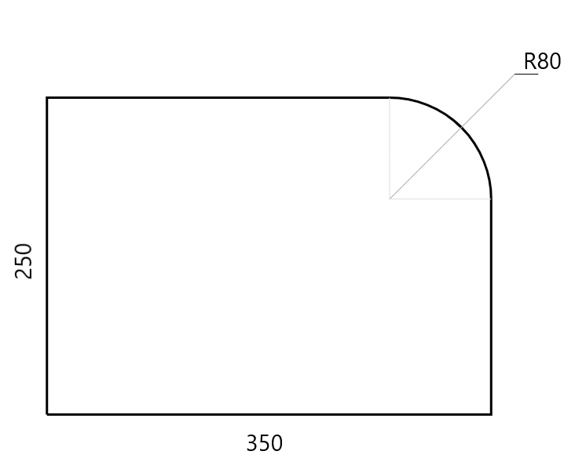
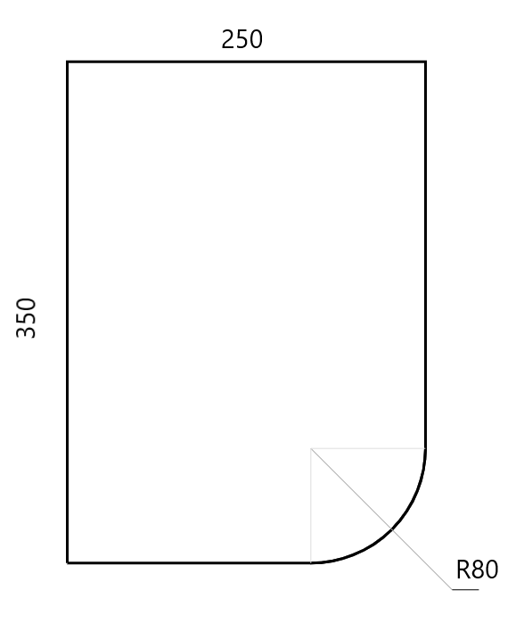

Вам нужно дополнить страницу, в центре которой создать поле для отрисовки детали с помощью «canvas» или «SVG».

В index.js дано исходные параметры детали detail{...} Нужно определить функцию drawDetail() для отрисовки объекта на холсте (как показано на картинке)

При изменении радиуса детали она должна перерисоваться (detail.rt.radius = 80)

При каждом нажатии кнопки разворота меняем объект и перерисовываем деталь таким образом, чтобы она повернулась на 90°